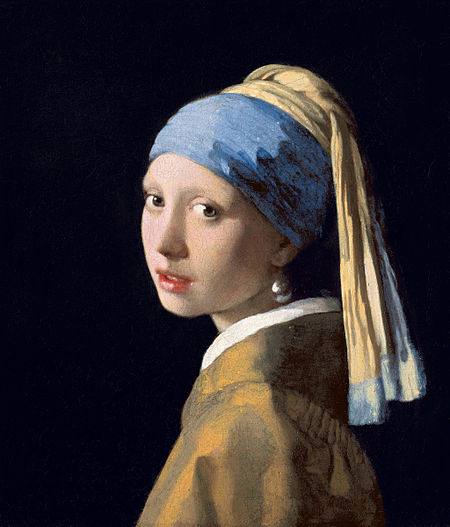
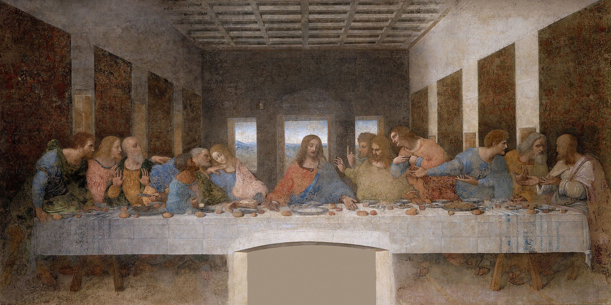
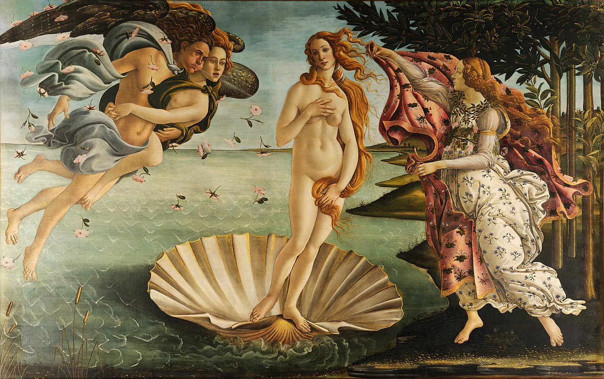
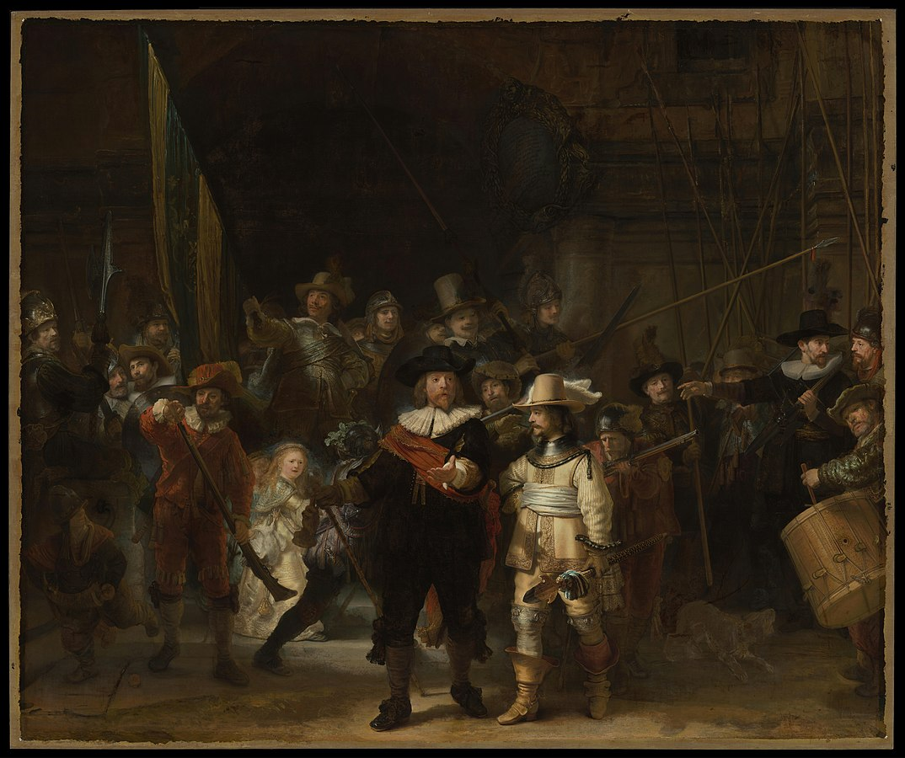
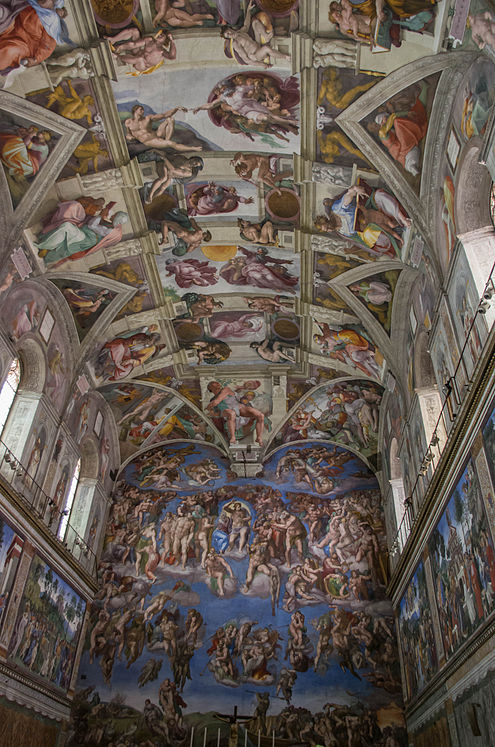

Top 10
1.Mona Lisa
-Leonardo da Vinci-

Este considerat o capodopera arhetipală a Renașterii italiene , și a fost descris ca fiind „cel mai bun cunoscut, cel mai vizitat, cel mai scris despre, cel mai cântat despre, lucrarea cea mai parodiate de artă din lume .“ Noile calități ale picturii includ expresia subiectului, care este adesea descrisă ca enigmatică, monumentalitatea compoziției, modelarea subtilă a formelor și iluzionismul atmosferic.
2.Noaptea înstelată
-Vincent van Gogh-

Noaptea înstelată este un ulei pe pânză al pictorului post-impresionist olandez Vincent van Gogh . Pictată în iunie 1889, descrie vederea de la fereastra orientată spre est a camerei sale de azil de la Saint-Rémy-de-Provence , chiar înainte de răsăritul soarelui, cu adăugarea unui sat ideal.Se află în colecția permanentă a Muzeului de Artă Modernă din New York din 1941, dobândită prin intermediul lui Lillie P. Bliss Bequest . Fiind considerată printre cele mai frumoase opere ale lui Van Gogh, "Noaptea înstelată" este una dintre cele mai recunoscute tablouri din istoria culturii occidentale.
3.Fata cu un cercel cu perle
Johannes Vermeer
Fata cu cercel de perla ( Dutch : Meisje cunoscut de parel ) este un ulei pictura de Aur olandez pictor Johannes Vermeer , datat c. 1665. Trecând prin diferite denumiri de-a lungul secolelor, a devenit cunoscut prin titlul său actual spre sfârșitul secolului XX, după cerceiul mare de perle purtat de fată înfățișată acolo.Lucrarea se află în colecția Mauritshuis din Haga din 1902 și a făcut obiectul unor tratamente literare diverse. În 2006, publicul olandez l-a selectat drept cel mai frumos tablou din Olanda.
4.Cina de taina
Leonardo da Vinci
Cina cea de Taină este o pictură murală din secolul al XV-lea , realizată de artistul italian Leonardo da Vinci, adăpostită de refectoria Conventului Santa Maria delle Grazie din Milano , Italia . Este unul dintre cele mai recunoscute tablouri din lumea occidentală. Se presupune că lucrarea a fost începută în jurul anilor 1495–96 și a fost comandată ca parte a unui plan de renovări a bisericii și a clădirilor acesteia, de către patronul lui Leonardo, Ludovico Sforza , Ducele de Milano . Pictura reprezintă scena Cina cea de Taină a lui Isus cu apostolii săi, așa cum este relatată în Evanghelia după Ioan , 13:21. Leonardo a înfățișat consternarea care a avut loc printre cei Doisprezece Apostoli când Isus a anunțat că unul dintre ei îl va trăda. Datorită metodelor utilizate, a unei varietăți de factori de mediu și a daunelor intenționate, pictura originală rămâne azi, în ciuda numeroaselor încercări de restaurare, ultima fiind finalizată în 1999.
5.Guernica
Pablo Picasso

Guernica este o mare pictură în ulei din 1937 pe pânză aartistului spaniol Pablo Picasso .Una dintre cele mai cunoscute lucrări ale lui Picasso, Guernica este considerată de mulți critici de artă drept una dintre cele mai emoționante și puternicepicturi anti-război din istorie.Este expus în Muzeul Reina Sofía din Madrid. Pictura cenușie, neagră și albă, care are 3,49 metri (11 ft 5 in) înălțime și 7,76 metri (25 ft 6 in), înfățișează suferințele oamenilor și animalelor provocate de violență și haos. În compoziție sunt proeminenți un cal, un taur, femei care țipă, dezmembrare și flăcări. Picasso a pictat Guernica la domiciliul său din Paris, ca răspuns la bombardarea lui Guernica , un oraș din Țara Bascilor din nordul Spaniei , de către Germania nazistă și Italia fascistă, la cererea naționalistilor spanioli . După finalizare, Guernica a fost expusă la expoziția spaniolă la Expoziția Internațională din Paris din 1937 , și apoi la alte locații din întreaga lume. Expoziția turistică a fost folosită pentru a strânge fonduri pentru salvarea războiului spaniol. Pictura a devenit curând faimoasă și apreciată pe scară largă și a contribuit la atragerea atenției la nivel mondial asupra războiului civil spaniol .
6.Nașterea lui Venus
Sandro Botticelli
Nașterea lui Venus este un tablou al artistului italian Sandro Botticelli , realizat probabil la mijlocul anilor 1480. Înfățișează zeița Venus care a ajuns pe țărm după nașterea ei, când a apărut din mare pe deplin crescut (numită Venus Anadyomene și deseori înfățișată în artă). Pictura se află în Galeria Uffizi din Florența , Italia. Deși cele două nu sunt o pereche, tabloul este inevitabil discutat cu celălalt tablou mitologic foarte mare al lui Botticelli, Primavera , tot în Uffizi. Sunt printre cele mai cunoscute tablouri din lume și icoane ale Renașterii italiene ; dintre cei doi, Nașterea este mai cunoscută decât Primavera .Ca reprezentări ale subiecților din mitologia clasică la scară foarte mare, acestea erau practic fără precedent în arta occidentală încă din antichitatea clasică, la fel ca mărimea și proeminența unei figuri feminine nude în Naștere . Se credea că ambele erau comandate de același membru al familiei Medici, dar acest lucru este acum incert.
7.Ceasul de noapte
Rembrandt
Compania de miliție a districtului II sub comanda căpitanului Frans Banninck Cocq , cunoscută și sub numele de The Shooting Company of Frans Banning Cocq și Willem van Ruytenburch , dar denumită în mod obișnuit The Night Watch ( olandez : De Nachtwacht ), este un 1642 pictură de Rembrandt van Rijn . Se află în colecția Muzeului din Amsterdam, dar este afișat proeminent în Rijksmuseum drept cel mai cunoscut tablou din colecția sa. Night Watch este unul dintre cele mai cunoscute tablouri olandeze din Epoca de Aur . Tabloul este renumit pentru trei lucruri: dimensiunea sa colosală (363 cm × 437 cm (11,91 ft × 14,34 ft)), utilizarea dramatică a luminii și a umbrei ( tenebrism ) și percepția mișcării în ceea ce ar fi fost în mod tradițional o armată statică portret de grup . Pictura a fost finalizată în 1642, la vârful epocii de aur olandeze . Înfățișează compania omonimă care se deplasează, condusă de căpitanul Frans Banninck Cocq (îmbrăcat în negru, cu o foaie roșie ) și de locotenentul său, Willem van Ruytenburch(îmbrăcat în galben, cu o cană albă). Folosind eficient lumina soarelui și umbra, Rembrandt conduce ochiul către cele mai importante trei personaje din mulțime: cei doi bărbați din centru (de la care tabloul primește titlul inițial) și femeia din fundalul din stânga purtând un pui. În spatele lor, culorile companiei sunt purtate de către însemn, Jan Visscher Cornelissen. Cifrele au dimensiuni aproape de viață.
8.Plafonul Capelei Sixtine
Michelangelo
Plafonul Capela Sixtină, pictată de Michelangelo intre 1508 si 1512, este o lucrare piatra de temelie a Renastere art . Plafonul este cel al Capelei Sixtine , capela mare papală construită în Vatican între 1477 și 1480 de Papa Sixtus al IV-lea , pentru care este numită capela. A fost pictat la îndemnul Papei Julius al II-lea . Capela este locația pentru conclavele papale și multe alte servicii importante. Diferitele elemente pictate ale tavanului fac parte dintr-o schemă de decorațiuni mai mare din cadrul Capelei, care include fresca mare The Last Judgment on the wall wall, de asemenea, de Michelangelo, picturi pe pereți de câțiva pictori de seamă din sfârșitul secolului XV, inclusiv Sandro Botticelli , Domenico Ghirlandaio și Pietro Perugino și un set de tapiserii mari de Rafael , întregul ilustrând o mare parte din doctrina Bisericii Catolice .
9.Persistența memoriei
Salvador Dalí

Persistența memoriei este un tablou din 1931al artistului Salvador Dalí și una dintre cele mai recunoscute lucrări ale suprarealismului . Afișat pentru prima dată la Galeria Julien Levy în 1932, din 1934 pictura se află în colecția Muzeului de Artă Modernă (MoMA) din New York , care a primit-o de la un donator anonim. Este recunoscut pe scară largă și frecvent referit în cultura populară și uneori menționat de mai multe titluri descriptive, precum „Ceasuri de topire”, „Ceasurile moi” sau „Ceasurile de topire”.
10.Sarutul
Gustav Klimt
Sărutul (în germană Der Kuss ) este o pictură pe ulei pe pânză cu adaos de frunze de aur , argint și platină de pictorul simbolist austriac Gustav Klimt . A fost pictată la un moment dat în 1907 și 1908, în timpul înălțimii a ceea ce savanții numesc „perioada de aur”. A fost expusă în 1908 sub titlul Liebespaar (îndrăgostiții), așa cum se arată în catalogul expoziției. Tabloul înfățișează un cuplu îmbrățișându-se unul pe celălalt, corpurile lor fiind îmbrăcate în robe frumoase elaborate decorate într-un stil influențat de stilul Art Nouveau contemporanși de formele organice anterioareMișcarea de arte și meserii . Pictura este atârnată acum în muzeul Österreichische Galerie Belvedere din Belvedere, Viena și este considerată o capodoperă a secesiunii din Viena (varianta locală a Art Nouveau ) și a celei mai populare opere a lui Klimt.